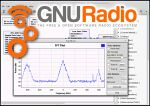
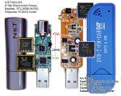
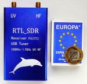
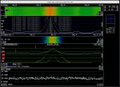
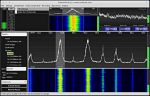

SDR, RTL-SDR - jak zacząć?
- Szczegóły
- Odsłony: 124806
Spis treści
 Radio programowalne (Software Defined Radio, SDR) to system radiokomunikacji, w którym elementy tradycyjnie implementowane sprzętowo (np. mieszacze, filtry, wzmacniacze, modulatory/demodulatory, detektory itp.) realizowane są w oparciu o oprogramowanie zainstalowanym na PC (lub innych urządzeniach o podobnych funkcjach).
Radio programowalne (Software Defined Radio, SDR) to system radiokomunikacji, w którym elementy tradycyjnie implementowane sprzętowo (np. mieszacze, filtry, wzmacniacze, modulatory/demodulatory, detektory itp.) realizowane są w oparciu o oprogramowanie zainstalowanym na PC (lub innych urządzeniach o podobnych funkcjach).
Sama koncepcja SDR nie jest nowa. Wiele informacji na jej temat znajdziesz na stronach GnuRadio.org czy też stronach Wikipedii poświęconych technice SDR.
Większość procesów przetwarzania sygnałów (radiowych, akustycznych, itd.) przez wiele lat było jedynie przedmiotem analiz teoretycznych. Obecny, szybki rozwój możliwości cyfrowych układów elektronicznych sprawił, że zostały one praktycznie zrealizowane. A możliwości współczesnych komputerów pozwalają skorzystać z tych projektów. Niemal każdemu.
Niniejszy opis dotyczy instalacji prostego tunera DVB-T (nazywanego dalej tunerem) pod systemem Linux (Debian, Ubuntu, Mint, itp.) i takim skonfigurowaniu OS'a, by móc bezproblemowo wykorzystać go jako urządzenie SDR.
Od czego zacząć?
Zakup prostych (i atrakcyjnych cenowo?) tunerów dedykowanych dla komputerów PC jest chyba najprostszą drogą do poznania technik odbioru sygnałów radiowych przy pomocy urządzeń SDR.
Warte zapamiętania jest jednak to, że często (choć nie zawsze!) cena bywa wykładnikiem możliwości urządzenia.
Te za <50zł wielkich nie mają. Ale (niektóre z tych za) >300zł też nie zachwycają. Warto więc poczytać. Zwłaszcza artykuły niesponsorowane.
System odbiorczy to: dobra antena (co krótkofalowców nie dziwi), adekwatny do potrzeb sprzęt czyli tuner oraz komputer PC (u mnie: z systemem operacyjnym Linux).
Oczywiście na komputerze muszą zostać zainstalowane odpowiednie sterowniki oraz oprogramowanie (Linrad, Gqrx, CubicSDR, itd., ale to temat na odrębny artykuł).
Testy przeprowadzone dla komercyjnych stacji UKF-FM pozwoliły poznać funkcjonalność poszczególnych programów.
 Istotna jest świadomość, że (funkcjonalnie) czym innym jest tuner DVB-T (i przypisane do niego sterowniki oraz oprogramowanie), a czym innym tuner RTL-SDR, które wymaga własnych, zupełnie innych sterowników oraz odmiennej ich konfiguracji. Są to rozwiązania alternatywne. Albo jedno, albo drugie.
Istotna jest świadomość, że (funkcjonalnie) czym innym jest tuner DVB-T (i przypisane do niego sterowniki oraz oprogramowanie), a czym innym tuner RTL-SDR, które wymaga własnych, zupełnie innych sterowników oraz odmiennej ich konfiguracji. Są to rozwiązania alternatywne. Albo jedno, albo drugie.
W dalszej części opisu używam określenia "tuner", które odnosi się do fizycznego urządzenia (dongle, stick) podłączonego do gniazda USB komputera. Natomiast jego funkcje zostaną określone przez odpowiednio dobrane sterowniki i oprogramowanie aplikacyjne.
Dalsza część artykułu będzie poświęcona bardziej zagadnieniom programowym (sterowniki, oprogramowanie) niż sprzętowym, gdyż to oprogramowanie pozwoli wykorzystać możliwości tunera. I komputera. Ale tuner (dongle) miej cały czas "pod ręką".
Instalacja i uruchomienie tunera RTL-SDR na komputerze (z Linuksem) nie jest skomplikowane. Wymaga jednak realizacji odpowiedniego scenariusza (chronologii) wykonywanych procedur. Zanim przystąpisz do dalszych działań (o ile nie zrobiłeś tego wcześniej) warto zapoznać się z artykułem: Automake, build-essential, cmake... na dobry start, gdzie opisałem czynności związane z przygotowaniem systemu Linux do samodzielnej kompilacji kodów źródłowych.
Wskazane procedury winny zostać wykonane w trybie znakowym lub w oknie terminala uruchomionego w trybie graficznym. Jeśli nie zostało zaznaczone inaczej ich wykonywane nie wymaga uprawnień superusera - root'a. Często jednak będziemy korzystali z "sudo"!
Podłączenie tunera do komputera (wbrew oczekiwaniom) nie daje od razu możliwości odbioru sygnałów przy pomocy aplikacji dedykowanych dla urządzeń SDR. A dokładniej RTL-SDR.
Podłączamy tuner i...
Zacznijmy od komendy (to pogrubiony tekst w listingu), która oprócz innych urządzeń wyświetli informację o tunerze:
~ $ lsusb
...
Bus 003 Device 004: ID 0bda:2838 Realtek Semiconductor Corp. RTL2838 DVB-T
...
~ $
Jeśli po podłączeniu tunera do PC zajrzymy do katalogu /dev znajdziemy tam informację o aktywnych urządzeniach dvb:
~$ ll -R /dev/dvb
dvb:
razem 0
drwxr-xr-x 3 root root 60 sty 27 14:31 ./
drwxr-xr-x 22 root root 4700 sty 27 14:31 ../
drwxr-xr-x 2 root root 120 sty 27 14:31 adapter0/
dvb/adapter0:
razem 0
drwxr-xr-x 2 root root 120 sty 27 14:31 ./
drwxr-xr-x 3 root root 60 sty 27 14:31 ../
crw-rw-rw-+ 1 root video 212, 0 sty 27 14:31 demux0
crw-rw-rw-+ 1 root video 212, 1 sty 27 14:31 dvr0
crw-rw-rw-+ 1 root video 212, 3 sty 27 14:31 frontend0
crw-rw-rw-+ 1 root video 212, 2 sty 27 14:31 net0
/dev $
Warto też sprawdzić katalog /etc/modprobe.d:
~ $ ls /etc/modprobe.d | grep rtl
blacklist-rtl.conf
~ $
Widać, że znajduje się tam (ale bywa, że tam go nie ma - to nie problem, ale uprzedzam) plik blacklist-rtl.conf (teoretycznie!) wyłączający ładowanie w momencie inicjacji modułów obsługujących tuner DVB-T. Warto zajrzeć co on zawiera:
~ $ cat /etc/modprobe.d/blacklist-rtl.conf
# This system has librtlsdr0 installed in order to
# use digital video broadcast receivers as generic
# software defined radios.
# blacklist dvb_usb_rtl28xxu
# blacklist e4000
# blacklist rtl2832
# blacklist fc0013
~ $
Zawartość pliku może być różna. Powyższy listing prezentuje zawartość rzeczywistego pliku. Zwróć uwagę, że (tu) wszystkie linie (zawierające frazę: blacklist) zaczynają się od znaku # (hash). Powoduje to, że nie wyłączają one niczego, gdyż (zaczynając się od #) są jedynie komentarzem! Potwierdza to również efekt komendy (wydanej przy podłączonym do PC tunerze DVB-T):
~ $ lsmod | grep dvb
dvb_usb_rtl28xxu 40960 1
dvb_usb_v2 40960 1 dvb_usb_rtl28xxu
dvb_core 126976 2 dvb_usb_v2,rtl2832
rc_core 36864 5 ir_lirc_codec,lirc_dev,dvb_usb_v2,dvb_usb_rtl28xxu
~ $
Jak widać moduły związane z obsługą tunera DVB-T (ale nie RTL-SDR) są aktywne. Ich obecność nie pozwoli na zainstalowanie sterowników dla SDR'a. Oczywiście możemy spróbować usunąć z systemu (aktywne) moduły związane z obsługą tunera DVB-T:
~ $ sudo rmmod dvb_usb_rtl28xxu rtl2832
rmmod: ERROR: Module dvb_usb_rtl28xxu is in use
rmmod: ERROR: Module rtl2832 is in use
~ $
ale czeka nas przykra niepodzianka.
Jeśli tuner jest włożony do gniazda USB ta prosta komenda skończy się błędem, gdyż moduły wykrywają aktywność urządzenia. Możemy je odłączyć. Ale włożenie tunera do gniazda spowoduje ponowne załadowanie modułów. Gdy podłączymy tuner DVB-T wyposażony w dobrą antenę po wydaniu komendy:
~ $ w_scan
w_scan w_scan version 20170107 (compiled for DVB API 5.10)
guessing country 'PL', use -c to override
using settings for POLAND
DVB aerial
DVB-T Europe
scan type TERRESTRIAL, channellist 4
output format vdr-2.0
output charset 'UTF-8', use -C to override
Info: using DVB adapter auto detection.
/dev/dvb/adapter0/frontend0 -> TERRESTRIAL "Realtek RTL2832 (DVB-T)": good :-)
Using TERRESTRIAL frontend (adapter /dev/dvb/adapter0/frontend0)
-_-_-_-_ Getting frontend capabilities-_-_-_-_
Using DVB API 5.10
frontend 'Realtek RTL2832 (DVB-T)' supports
INVERSION_AUTO
QAM_AUTO
TRANSMISSION_MODE_AUTO
GUARD_INTERVAL_AUTO
HIERARCHY_AUTO
FEC_AUTO
FREQ (174.00MHz ... 862.00MHz)
-_-_-_-_-_-_-_-_-_-_-_-_-_-_-_-_-_-_-_-_-_-_-_
Scanning DVB-T...
Scanning...<tu pojawi się lista dostępnych stacji TV>
--- lub gdy antena kiepska i/lub brak dostępnych stacji:
ERROR: Sorry - i couldn't get any working frequency/transponder
Nothing to scan!! ---
~ $
Jeśli coś wykrył to tuner umożliwia oglądanie wybranych kanałów TV. A przecież nie o to nam chodziło. Musimy zrealizować wspomniany na wstępie scenariusz. Zacznijmy więc od...
Przygotowanie środowiska
a.) zaktualizuj system (posiadaną dystrybucję Linux'a):
~$ sudo apt-get update
b.) zanim przystąpisz do dalszych działań (o ile nie zrobiłeś tego wcześniej) zapoznaj się z artykułem: Automake, build-essential, cmake... na dobry start, gdzie opisałem czynności związane z przygotowaniem samodzielnej kompilacji kodów źródłowych. Należy w oknie terminala wydać polecenie (w artykule opisałem to znacznie szerzej).:
~$ sudo apt-get install git automake cmake build-essential libusb-1.0-0-dev
Jeśli któryś z programów został już wcześniej zainstalowany to pojawi się komunikat wskazujący, że jest on już w najnowszej wersji. Może wydawać się, że nie wszystkie instalowane pakiety są potrzebne.
Tu powiem tylko tyle: potem doinstalujemy ich jeszcze więcej, gdyż kolejnym celem będzie samodzielna kompilacja (budowa ze źródeł) programów: Gqrx oraz CubicSDR. Ale to już materiał na odrębny artykuł.
Instalowanie sterowników RTL-SDR
a.) wejdź do swego katalogu domowego wykonując komendę:
~$ cd
b.) utwórz dedykowany katalog o nazwie "SDR":
~$ mkdir SDR
c.) wejdź do katalogu dedykowanego (SDR):
~$ cd SDR
d.) Pobierz ze strony producenta OSMOCOM i zainstaluj sterowniki dla układu RTL2832U:
~/SDR/ git clone git://git.osmocom.org/rtl-sdr.git
~/SDR/ cd rtl-sdr/
~/SDR/rtl-sdr/ mkdir build
~/SDR/rtl-sdr/ cd build
~/SDR/rtl-sdr/build cmake ../ -DINSTALL_UDEV_RULES = ON
~/SDR/rtl-sdr/build make
~/SDR/rtl-sdr/build sudo make install
~/SDR/rtl-sdr/build sudo ldconfig
~/SDR/rtl-sdr/build sudo cp ../rtl-sdr.rules /etc/udev/rules.d/
e.) By wyeliminować możliwość ładowania zbędnego modułu dvb kernela utwórz (jeśli jeszcze nie istnieje) "czarną listę" (blacklist) dla domyślnego sterownika (odbiornika DVB-T).
e1.) wejdź do katalogu: /etc/modprobe.d
e2.) Utwórz (jeśli nie ma lub rozpocznij edycję jeśli istnieje) w trybie znakowym bezpośrednio, a w trybie graficznym w oknie terminala plik o nazwie "blacklist-rtl.conf" wywołując komendę:
/etc/modprobe.d/ $ sudo nano blacklist-rtl.conf (zawierający następującą treść:)
blacklist dvb_usb_rtl28xxu
blacklist rtl2832
blacklist rtl2830
f.) Ponownie uruchom komputer. Choć istnieją inne metody aktywowania nowych ustawień, ta wydaje się najprostsza.
g.) Po uruchomieniu się komputera, nie uruchamiając jeszcze aplikacji korzystających z tunera, włóż go do gniazda USB i sprawdź, czy urządzenie zostało prawidłowo rozpoznawane. W tym celu wydaj komendę:
~ $ rtl_test -t
Found 1 device(s):
0: Realtek, RTL2838UHIDIR, SN: 00000001
Using device 0: Generic RTL2832U OEM
Found Rafael Micro R820T tuner
Supported gain values (29): 0.0 0.9 1.4 2.7 3.7 7.7 8.7 12.5 14.4 15.7 16.6 19.7 20.7 22.9 25.4 28.0 29.7 32.8 33.8
36.4 37.2 38.6 40.2 42.1 43.4 43.9 44.5 48.0 49.6
[R82XX] PLL not locked!
Sampling at 2048000 S/s.
No E4000 tuner found, aborting.
~ $
Jeśli jednak najpierw uruchomiłeś aplikację sterującą tuner, a dopiero potem wywołałeś poniższą komendę to aktywność aplikacji najprawdopodobniej spowoduje następujący błąd:
~ $ rtl_test -t
Found 1 device(s): 0: Realtek, RTL2838UHIDIR, SN: 00000001
Using device 0: Generic RTL2832U OEM
usb_claim_interface error -6
Failed to open rtlsdr device #0.
~ $
Z kolei aktywna blacklista (czarna lista dla sterowników DVB-T) uniemożliwi wykorzystanie tunera jako urządzenia DVB-T, powodując błąd:
~ $ w_scan
w_scan w_scan version 20170107 (compiled for DVB API 5.10)
guessing country 'PL', use -c to override
using settings for POLAND
DVB aerial
DVB-T Europe scan type TERRESTRIAL, channellist 4
output format vdr-2.0
output charset 'UTF-8', use -C to override
Info: using DVB adapter auto detection.
main:4007: FATAL: ***** NO USEABLE TERRESTRIAL CARD FOUND.
***** Please check wether dvb driver is loaded and
verify that no dvb application (i.e. vdr) is running.
~ $
Ale to jest efekt zamierzony.
Oznacza to, że odpowiednie sterowniki zostały zainstalowane, a system odpowiednio skonfigurowany. Możemy teraz zainstalować i używać aplikacje SDR (np. Gqrx, Dump1090, CubicSDR i in.), odwołujące się do sterowników RTL-SDR.